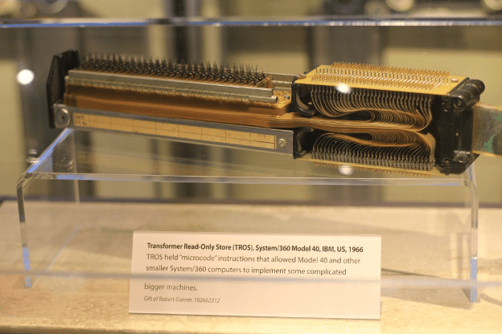
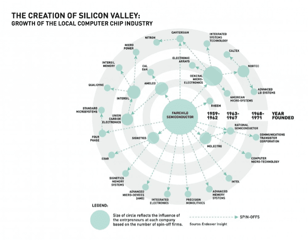

.svg)

.svg)
От изобретения интегральной схемы до сегодняшнего дня
Продолжаем рассказывать о рождении и развитии индустрии полупроводников, транзисторов и микросхем, без которых были бы невозможны любые современные электронные устройства. В прошлой статье мы остановились на 1954 году, когда ученые из компании Texas Instruments создали первый кремниевый транзистор. В этом материале мы расскажем об изобретении интегральной микросхемы и процессора, создании первого массового компьютера и о состоянии полупроводниковой индустрии сегодня.
Восьмерка предателей и изобретение интегральной микросхемы
В 1956 году изобретатель германиевого транзистора Уильям Шокли уволился из Bell Laboratories и создал собственную компанию Shockley Semiconductor.
Фирма стала одним из первых крупных резидентов только что открытого технопарка Стенфордского университета в калифорнийском Пало-Альто. По одной из версий, Шокли предпочел Калифорнию Массачусетсу, главному инновационному центру Америки в те годы, из-за того, что рядом жила его мать. В будущем этот технопарк станет знаменитой Кремниевой долиной, но тогда о нем мало кто знал.
Шокли решил пригласить в свою команду лучших молодых ученых страны. На призыв откликнулись тридцать талантливых инженеров и физиков. Многие из них потом совершили прорывные открытия, изменившие электронные технологии — но не в Shockley Labs.
Вскоре компания начала трещать по швам. Оказалось, что Шокли — отвратительный руководитель. Он страдал от психологических проблем, делавших его склочным, эгоистичным и неспособным к компромиссу. В 1957 году он резко изменил направление исследований — вместо транзистора ученые начали работать над четырехслойным диодом, преимущества которого были не ясны никому, кроме него самого.
В итоге в сентябре 1957 года восемь талантливых инженеров разругались с Шокли, и уволились из Shockley Labs. Нобелевский лауреат назвал их «предателями» — поэтому в историю они вошли как «предательская восьмёрка».
«Предатели» основали свою компанию. Финансирование им предоставил инвестор и предприниматель Шерман Фэйрчайлд, поэтому она получила название Fairchild Semiconductor. Восьмерка была очень мотивирована: своими исследованиями они хотели доказать неправоту Шокли. И у них это получилось.
Fairchild Semiconductor перевернула индустрию полупроводников и на десятилетие стала ее лидером. Уже в 1959 году инженер Жан Эрни разработал планарную технологию производства транзисторов. Она позволила уменьшить утечки электричества и сделать транзисторы плоскими и компактными. По такой технологии они производятся и сегодня. Именно это открытие сделало возможным создание интегральной микросхемы.
Главной проблемой электроники тех лет была перегруженность чипов проводкой — каждый элемент приходилось соединять с другим. При этом все они выделяли тепло и чипы быстро перегревались. Для того, чтобы исправить это, в 1959-1960 годах ученые придумали соединять их через единую подложку из полупроводникового материала.
Примерно в одно время к созданию интегральной микросхемы пришли Роберт Нойс из Fairchild и Джек Килби из Texas Instruments. Без наработок друг друга и других инженеров из соперничающих команд у них вряд ли что-нибудь получилось.
Но предприятия были конкурентами, а поэтому долго судились за первенство в изобретении интегральной микросхемы и патенты на нее. Лишь в 1966 году они пришли к мировому соглашению о перекрестном использовании технологий, при этом основной патент остался у Нойса. Но большую славу снискал Килби, который был награжден за создание интегральной схемы Нобелевской премией по физике — правда, лишь в 2000 году.
Создание первого ПК
Появление интегральных схем произвело революцию в электронной промышленности и проложило путь для таких устройств, как мобильные телефоны, компьютеры и телевизоры. Тем не менее, первые интегральные схемы были медленными и заменяли лишь несколько электронных компонентов. Применялись они в основном в ВПК и аэрокосмонавтике — Fairchild стал лидером отрасли благодаря контрактам с НАСА.
Несмотря на то, что пионерами в области полупроводников и транзисторов стали такие компании, как Fairchild, Bell и Texas Instruments, первое серийное производство транзисторов удалось запустить не им, а IBM. Она же создала и первую серию компьютеров, в котором использовались микросхемы — IBM Series / 360, поступивший в продажу в 1965 году.
Этот компьютер стал не меньшим прорывом в индустрии, чем интегральная микросхема. В IBM S / 360 впервые был использован 8-битный байт, который стал стандартной единицей хранения информации. Также он стал первым компьютером с полной совместимостью приложений и одинаковым набором команд. Это означало, что клиент, у которого возрастали потребности, мог купить более совершенный компьютер, и легко перевести в него все свои задачи. С устройствами предыдущего поколения это было невозможно — при любой смене оборудования программу пришлось бы переписывать с нуля.
Другим компаниям совместимость дала возможность создавать компьютерное оборудование, которое можно было легко использовать вместе с S / 360. Вскоре появилась целая индустрия периферийных устройств для этих компьютеров.
Все эти сильно увеличило спрос на компьютеры. Правда, позволить себе их могли лишь очень крупные игроки — так, модель S / 360 №25, вышедшая на рынок в 1968 году, стоила 253 тысячи долларов — с учетом инфляции сегодня это почти 2 миллиона долларов.
От интегральной микросхемы к процессору
В 1960-х Fairchild стала самой крупной компанией Стэнфордского технопарка. В это время Кремниевая долина уже могла претендовать на статус главного центра инноваций в Америке.
Но к концу десятилетия Fairchild растерял инновационный потенциал, и к 1968 году стала убыточной. В итоге ее покинули почти все ее основатели — многие из них попытались создать свои собственные фирмы, другие занялись наукой или венчурными инвестициями.
«Предательская восьмерка» и ученые, пришедшие в Fairchild позднее, участвовали в создании десятков передовых компаний Кремниевой долины — либо напрямую как инженеры-инноваторы, либо как инвесторы и управленцы. Главными их детищами стали Intel, основанный Муром и Нойсом в 1968 году, и AMD, созданная последним управляющим директором Fairchild Джерри Сандерсом в 1969.
В 1971 году Intel выпустил на рынок 4004 — первый микропроцессор, то есть универсальный микрочип, на котором было размещено 2300 транзисторов. Прежде компьютеры использовали несколько микросхем, выполняющих отдельные операции. Но микропроцессор мог заменить их все.
С тех пор микросхемы стали во много раз более вместительными — на самых современных процессорах умещается уже около 19 миллиардов транзисторов. В электронике было совершено огромное количество открытий, но прорывов, имевших такое же значение, как создание кремниевого полупроводника или интегрированной микросхемы, больше не происходило. Историки технологий считают, что и сегодня мы живем в эпоху микропроцессоров.
Состояние полупроводниковой индустрии сегодня
В 1970-х Кремниевая долина окончательно стала центром инноваций Америки. Многие инженеры, создававшие первые транзисторы, микрочипы и процессоры, стали миллионерами. Гордон Мур, покинувший этот мир в марте 2023 года, занимал некогда 66 место в мировом списке богатейших людей Forbes. Плохо кончил лишь Шокли — после развала его компании его психологические проблемы усугубились. Он стал пропагандировать расистские и евгенические идеи — например, стерилизацию глупых и безответственных людей, и стал изгоем.
В 1965 году Гордон Мур, директор по исследованиям Fairchild Semiconductor, сформулировал закон, получивший его имя: количество электронных компонентов на чипе будет удваиваться каждые два года. Также он предсказал, что вместимость чипов станет основным параметром развития всей электроники. Прогноз оказался верным.
В 1960-х компании производили несколько тысяч транзисторов в месяц. Одна штука стоила доллар (8 долларов сегодня). В 2014 году в американском Институте электрики и электронной инженерии посчитали, что на тот момент в мире производилось 8 триллионов транзисторов… в секунду. Тогда же обозреватель Forbes Джим Хэнди посчитал, что за всю историю было создано и продано почти 3 секстиллиона транзисторов. С каждым годом их количество в мире увеличивается примерно на 65% — так что сегодня их может быть около 50 секстиллионов. Примерно столько клеток в телах всех жителей Китая.
Современный рынок полупроводников и микросхем оценивается в 573 миллиарда долларов. В отрасли доминируют американские компании, которые занимают около 50% рынка. На втором месте Корея — 24%. За ней следуют Япония и ЕС (по 9%), Тайвань (8%) и Китай (5%),
Топ-10 компаний по продажам (2021):
- Intel
- Samsung
- Taiwan Semiconductor Manufacturing Co. (TSMC)
- SK Hynix Inc.
- Broadcom Corporation
- Qualcomm
- Micron Technology
- Applied Materials
- Nvidia Corporation
- Texas Instruments
С конца 1940-х во всем мире было выдано около 53 000 патентов на изобретения, связанные с полупроводниками. Более 43 000 из них — в США. Самые большие портфели патентов на полупроводники на сегодняшний день у американских Micron Technology, AMD, а также у тайваньской Macronix.
Итог
Время создания компьютеров - это время смелых решений. Если бы не та восьмерка людей, ушедших и создавших собственную компанию, мы могли бы еще не скоро увидеть первые рабочие интегральные схемы.